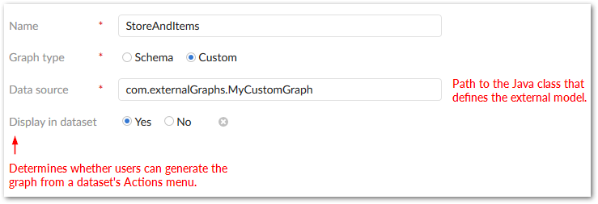
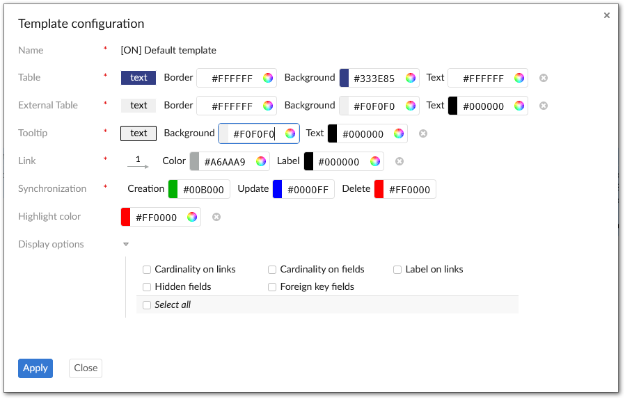

If you have access to the EBX® Administration area, you can create and edit data model graph configurations and templates. Configurations determine which model the add-on renders when users generate graphs. The add-on can generate graphs of EBX® data models and models from external sources. Templates are applied to configurations to determine the look and feel of generated graphs. These topics are discussed further in the following sections:
When creating or editing a data model graph configuration, the available options depend on the Graph type setting. Select the Schema option to base the generated graph on an EBX® model. Choose Custom to generate a graph from an external data source.
When set to Schema, the Data model group displays and allows you to:
Choose the model associated with this configuration using the Publication mode and Data model fields.
Select the template used by the configuration.
Specify whether users can select which tables display when generating the graph.
If you set the Graph type to Custom, you must supply the fully qualified path to a Java class. To make the graph accessible to users from the Actions menu, enable the Display in dataset property. See Generating a model graph from an external source for information.
You can create and edit templates that determine how generated graphs display. Editable features include color choices and visibility of graph components. Note that when users view a data model graph, they can edit the template applied to the graph. Any saved changes apply only to the graph they are viewing and not the default template. Additionally, these changes only last for the duration of the user's current session. After logging out, changes are reverted.
